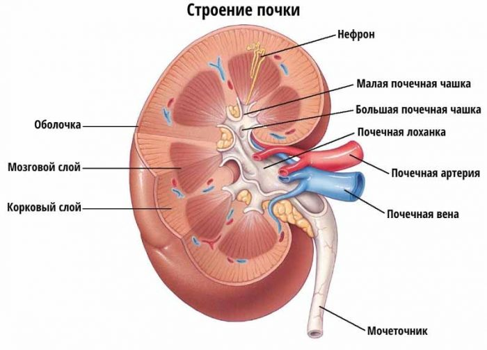
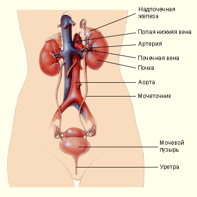

ВЫДЕЛИТЕЛЬНАЯ СИСТЕМА
Выделение — процесс, обеспечивающий выведение из организма продуктов жизнедеятельности.
Основные органы выделения - почки. Через них удаляются жидкие продукты обмена веществ, т.е. почки поддерживают водно-солевой баланс в организме.
Составляющие выделительной системы:
1) почки;
2) мочеточник;
3) мочевой пузырь;
4) мочеиспускательный канал;
5) уретра;
 